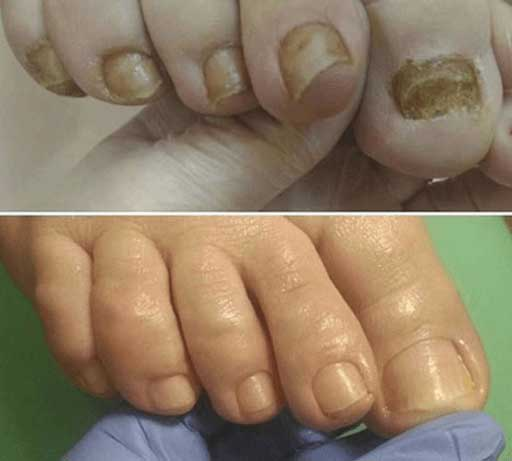
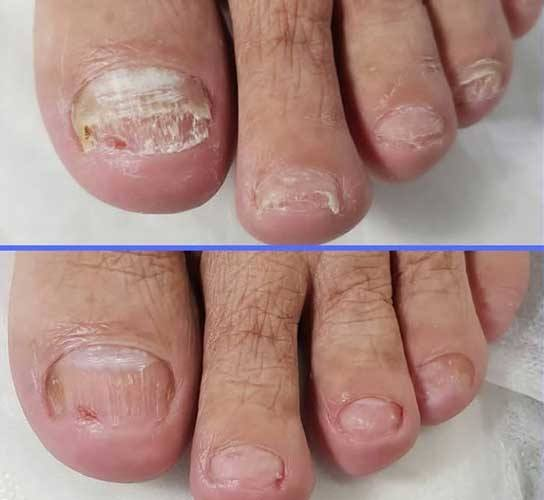
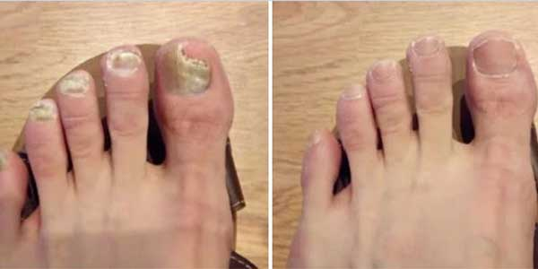
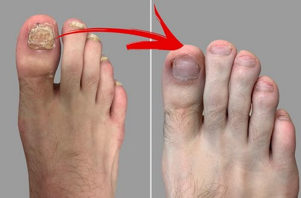
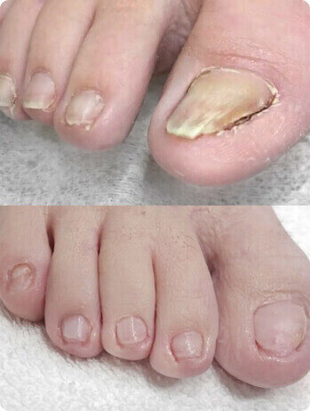
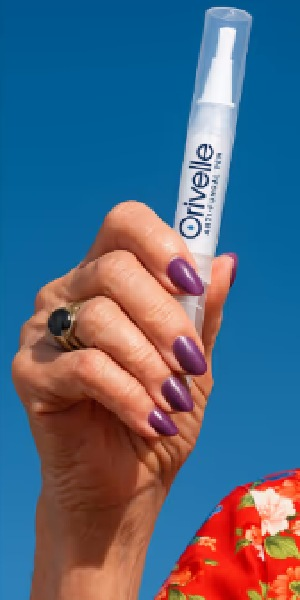
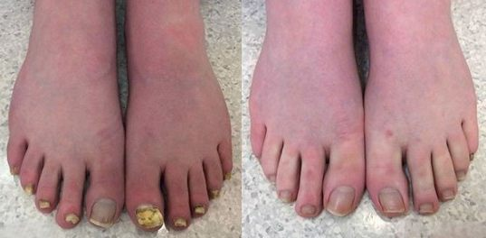
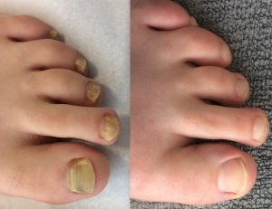

Here are some key points from expert A. Nevin's press conference. The US has one of the highest rates of nail fungus globally.
A. Nevin, one of the world's most renowned health experts, in an exclusive interview.
 A. Nevin - health expert
A. Nevin - health expert
Why don't specialists treat this disease?
Do you know how many people will get a yeast infection in 2026? There were 55,000 people in the US last year. 31,000 of them had excessive sweating on their feet. This is more than half of all cases. Nail fungus not only affects our toenails but also enters the bloodstream, spreading throughout the body. The fungus destroys our body from the inside and affects all organs. Tiny spores attach to internal organs and multiply, causing the development of pathology. Consequently, vital organs are also affected by the infection. This means that the body is rotting from the inside. Anyone who suffers from nail fungus is susceptible to these risks. The immune system is weakened by frequent colds, and stress adds to the terrible picture.
For this reason, I consider nail fungus to be an extremely dangerous disease, responsible for many ruined lives throughout the country.
Why don't doctors treat this disease?
First, many people don't seek help at all because they underestimate the danger of this disease. If you do seek help, it's usually too late. Often, people notice changes in their feet or toes. Of course, you will be prescribed medication that will affect the disease and improve its condition. Unfortunately, most patients are not patient enough (due to overdoing it) and skip examinations, which allows the fungus to spread unnoticed. Fungal diseases require constant monitoring, and few people are aware of the possible consequences for internal organs. I could tell you about hundreds of cases, but I would probably prefer to focus on those where the danger is particularly obvious.
The external symptoms of the fungus can be treated quite well, but this does not reduce the fatal risk of infection.
Many clinics are also chronically underfunded. There are often not enough specialists in the regions who specialize in fungal infections. Additionally, at least 37% of the population lacks access to dermatological services. More than half of all personnel do not meet the necessary qualifications. I very much doubt that the personnel will be able to make the correct diagnosis and effectively treat a fungal infection. Sometimes it would even be better if a person stayed at home instead of going to the hospital. We are forced to hire unqualified personnel because we suffer from a shortage of personnel. Of course, the employees are qualified, but they have very little experience and a lot of responsibility. Older doctors are retiring or simply dying, and young specialists do not have the opportunity to gain experience and knowledge. Medicine is currently experiencing great stress, and there is simply no time to properly treat each patient. I would like to see more qualified medical personnel, but this is very difficult to implement.
Is the high incidence of fungal infections in our region a consequence of the inexperience of specialists?
This is certainly one of the reasons, but not the only one. There is also a shortage of truly effective drugs. Pharmacies like to sell what they have in stock, but this, unfortunately, does not help much. Old medicines are useless, and even new medicines promise miracles, but, unfortunately, they do not give anything. Prescription drugs aren't much better. While they temporarily relieve symptoms, often the liver or stomach is so badly infected that it results in really negative health side effects. Most medications do not treat fungus properly. They relieve the symptoms, while the fungus remains in the body and causes suffering to the patient.
 Fungus in the human body.
Fungus in the human body.
The situation is not much better in private clinics. Usually, inexperienced specialists work there who know very little about diseases and treatment methods. They have one goal: to get as much money as possible from patients, but have no real interest in helping them.
What should people do? As an experienced expert, how would you solve this problem?
Of course, I am not sitting idly by. Unfortunately, I cannot solve this problem myself. This is the task of universities. I cannot train new specialists. Therefore, I do not expect major changes in the near future. In other regions, the problems are very similar. We are all in the same boat.
And yet there is a glimmer of hope. Some discoveries are helping to fight nail fungus. The US is participating in a large project to test an innovative product that fights nail fungus and can eliminate fungal infections in the body. The project will start in late 2025, but people in the US can try this treatment now before other regions can access it.
Why do you think this formula will matter?
A new, unique, natural remedy can destroy nail fungus, eliminating external symptoms and alleviating the condition of the entire body. Patients feel real relief when using the product. The blood circulation and internal organs are freed from fungal cells so that the infection recedes. Strengthened immunity, and cleansed body of fungus and toxins - this is the result of using a truly good product.
In my opinion, this product can save thousands of lives. Therefore, I did my best to convince the authorities to provide our region with this tool on a pilot basis.
What brand is behind this product and why is it so effective?
Today, this is the most effective remedy for fungal diseases. I am talking about a modern product called Orivelle. Unlike most other drugs, it was developed by independent researchers in the US. This product is ten times more effective than conventional means and methods of treatment. Moreover, it has no side effects, is not addictive, and helps the body cope with the fungus, significantly reducing the risk of relapse.
It is very easy to use
✅ Turn the bottom of the handle to release the formula, then apply a thin layer with a brush directly to the affected nail and the skin around it.
✅ Allow the solution to absorb completely and dry. There is no need to rinse.
The secret of efficiency lies in some features of the human body. Nail fungus is so resistant because it attaches itself to body tissues. If the usual medicines are stopped taking, the fungus appears again. Another problem is that the immune system cannot fight the fungus on its own. At best, this can only slow down the development of the infection. A weak immune system cannot prevent the rapid growth of the fungus, which sooner or later leads to poor health.
Orivelle cleanses the body of toxins, strengthens the immune system, and helps the body produce antibodies that destroy fungus throughout the body. This allows the body to get rid of the fungus. Antibody production continues even if the product is no longer used. The reaction to the fungus increases tenfold, and re-infection is considered almost impossible. One course of using Orivelle eliminates the fungal infection and prevents complications. Then you can use the product for prevention.
In addition, the product effectively helps with cracked heels and rough skin, gently softening and moisturizing them. After using the product, a decrease in fatigue in the legs is noted.

Why is Orivelle more effective than other popular anti-fungal drugs sold in pharmacies?
- ❌ Contains chemicals;
- ❌ Temporary effect;
- ❌ Does not affect the quality of nails;
- ❌ May cause skin irritation;
- ❌ Allergic reactions;
- ❌ High price.

- ✔ 100% natural ingredients;
- ✔ Long-term cumulative effect;
- ✔ Strengthens nails;
- ✔ Does not cause side effects;
- ✔ Does not cause allergic reactions;
- ✔ Affordable price.
Mushrooms are living organisms that, like all other living things, adapt to their environment. Most drugs were developed 20-30 years ago. During this time, fungi have developed resistance to these drugs. Thanks to this innovative formula, fungi can be eliminated both externally and in the body.
The results showed that Orivelle is highly effective against fungal diseases.
This formula has a truly beneficial effect on the body:
- ✅ Eliminates fungal infection
- ✅ Relieves irritation and itching of the skin.
- ✅ Quickly regenerates nails, and heals wounds and cracked heels.
- ✅ Eliminates unpleasant odor and normalizes the work of sweat glands.
- ✅ Prevents the reproduction and growth of pathogens.
- ✅ Normalizes the immune system and helps cure chronic fungal diseases.
- ✅ The blood and lymph nodes are cleared of the remnants of the fungus.
- ✅ Helps cleanse the body of toxins and waste.
- ✅ Prevents re-infection.
- ✅ Relieves pain and fatigue in the legs
Orivelle Action
Result of using Orivelle
 Condition of the skin on the heels after using Orivelle
Condition of the skin on the heels after using Orivelle
Are there any restrictions on its use and why is there such a big discount on the product?
There are no restrictions on use. The formula is suitable for everyone. And all because the product is made from natural ingredients. They are harmless to the human body and have no side effects.
Regarding the second question: as I said, the formula was developed by independent researchers and is produced in independent research centers. Production is quite expensive. If the Orivelle formula belonged to a large pharmaceutical company, the drug would be offered at a much higher price. This discount is designed so that all patients can finally do something useful for their health. If you order a comprehensive Orivelle treatment, you will receive a 50% discount. Limited offer.
Here are some stories of people who have already undergone treatment with Orivelle:
"He didn't want to hold my hand. And now he even kisses me!"
I had a terrible complex because of nail fungus. Men noticed it. None of them invited me on a second date... Finally, luck smiled at me - my boyfriend and I fell in love with each other. However, he didn't even want to shake my hand. In 6 months of our relationship, I didn't meet his family and friends because I didn't want them to see me...
After the Orivelle treatment, my hands no longer disgust my boyfriend. Now there are even more kisses! My boyfriend proposed to me, and we are preparing for the wedding.
Anna, 36 years old.
"I'm no longer afraid that people will be disgusted with me."
My toenails smelled awful and had strange growths. The hands were no better. In the supermarket, cashiers took bills with disgust. "Don't go near this person because he'll infect you," mothers told their children on the playground when I went there with my grandson. But the worst part is that it's contagious! I posed a danger to my grandchildren!
After the Orivelle course, I can confidently greet my neighbor with a handshake and play with my grandchildren because my hands are no longer repulsive to them. I don't have to walk with burning feet in closed shoes like I usually do in flip-flops - no smell! Relief that cannot be described.
Oscar, 65 years old.
"Finally I can go to a cosmetologist!"
The staff kicked me out of the pool because people started making noise about me spreading fungus. They all looked at me as if I were a leper. It was the biggest humiliation of my life! But I had no right to complain. I caught the fungus in the pool myself. Moreover, I still had to forget about getting a pedicure or going to a spa. It was awful! Nothing helped me solve this problem. Even the "laser" couldn't do it, despite paying $1500!
Only Orivelle worked! In 2 weeks, the fungus disappeared, I feel feminine again, and now I can take care of myself. I go to the pool, use the services of a cosmetologist, and go to the spa. I no longer need to constantly hide my feet from the rest of the world.
Lily, 45 years old.
How can I buy Orivelle?
The only condition is that you must live in the US and be at least 30 years old. Orivelle is delivered directly from the warehouse by mail. It would be a mistake to distribute the product through retail outlets. We don't want people standing in long lines. In any case, the patients are already suffering enough, and it would be terrible to keep them waiting. Nobody wants to stress. Ordering a product online is much easier. Fill out the form, provide your name and phone number, and you will be contacted shortly. Our specialist will call you and recommend treatment. Just enter your address and desired delivery date, and the courier will deliver the goods to you.
Complete the order form on the website so we can process orders from the US. As I said, all you have to do is provide your name and phone number. I guarantee that all patients who order Orivelle will receive it.
IMPORTANT: For best results, use twice a day, morning and evening.
✔️Update: packages are still available. LIMITED Discounted Supply AVAILABLE as of: 05 January 2026
Just for the visitors of our site, the Orivelle will be sold at a discount! Hit the "SPIN" button and win a discount! Good luck!
 SPIN
SPIN
Comments
Alice Jacobs
8 hours ago
Isla Wall
8 hours ago
Harper Fox
10 hours agoAlice Richardson
12 hours ago
Aaron Nevin
Best wishes, Aaron Nevin.
Elsie Lachman
13 hours agoAmber McEwan
15 hours agoSophia Kaplan

Isaac Kaplan
16 hours agoJohn Hayes
Isaac Kaplan
John Hayes
Oliver McNeil
16 hours agoViolet Irwin
16 hours agoPiper Horne
Jasmine Shaw
16 hours agoCharles Gill
16 hours agoHolly Robbinson
16 hours agoEleanor Vinson
Ethan Reid
16 hours ago
Annabelle Tanner
16 hours ago
Aaron Nevin
Best wishes, Aaron Nevin.
Annabelle Tanner
Aaron Nevin
Chase Horner
16 hours agoRuby Quinn
16 hours agoI ordered it here, and they called me to confirm the order. Now I can finally go back to the pool in sandals :)

Ashton Graham
16 hours agoAaron Nevin
Madeline Irwin
16 hours ago
Archer Lee
16 hours agoAaron Nevin
Violet Collins
16 hours ago
Tahlia White
16 hours agoAaron Nevin
The tool is very effective and affordable, with a 50% discount, so hurry up! And stay away from fakes!
Best wishes, Aaron Nevin.
Layla Walsh
16 hours ago
This is an advertisement and not an actual news article, blog, or consumer protection update.
MARKETING NOTICE: This website is a marketplace. As such, you should be aware that the owner has a financial connection to the products and services advertised on the website. The owner receives a payment when a qualified lead is referred, which is the extent of it.
ADVERTISING NOTICE: This website and the products and services mentioned on the website are advertising markets. This website is an advertisement and not a news publication. All person photos used on this page are models. The owner of this website and the products and services mentioned on this website provide only a service through which consumers can obtain and compare information.
HEALTH NOTICE: If you are pregnant, nursing, taking medication, or under medical supervision, please consult a physician or healthcare professional before using this product. This product should be used only as directed on the label. Consult a doctor before use if you have a serious medical condition or are taking prescription medications. Advice from a physician should be sought before using this or any other dietary supplement. All trademarks and copyrights are the property of their respective owners and are not affiliated with this product. These statements have not been evaluated by the FDA. This product is not intended to diagnose, treat, cure, or prevent any disease. Individual results may vary. By using this website, you agree to the Privacy Policy and all terms and conditions printed on this website.